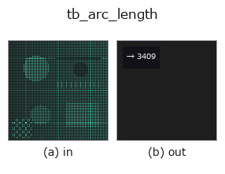

typed op• 데이터 종류: points → feature
• 호출: fullseye.apply(img, "tb_arc_length", a=0.5, b=0.5)(2-D 는 이미지 1 장 + 스칼라 노브 2 개 a,b∈[0,1] 모델)

*그림은 128×128 합성 입력에서 실제로 실행한 출력. 왼쪽이 입력, 오른쪽이 출력. 점군은 위에서 본 산점도(밝기 = z), 1-D 열은 꺾은선, 볼륨은 z 방향 최대값 투영, 동영상은 가운데 프레임, 복소 영상은 진폭이며, 그림이 되지 않는 반환값은 값 자체를 표시한다.*
*노브 a 는 출력을 바꾸지 않는다(실측: 0.1 / 0.5 / 0.9에서 동일).*
*노브 b 는 출력을 바꾸지 않는다(실측: 0.1 / 0.5 / 0.9에서 동일).*
단계(앞에 오는 op → 이 op, 왼쪽에서 오른쪽으로):
▸ tb_arc_length: 단계 (문서 사이트)
곡선의 누적 호 길이와 전체 길이. → (cumulative (N,), total float).
순서 있는 점열 curve (N,3)를 index 순서로 꺾은선으로 보고, 이웃 점 간의 유클리드 거리를 누적한다. cumulative[0]=0, cumulative[i] = 처음부터 i번째까지의 꺾은선 길이, total = cumulative[-1]. 단위는 좌표와 같다.
• 입력은 float로 변환될 뿐 형상 검증은 없다(열 수가 3 이외여도 계산은 통과한다).
• N=1에서는 cumulative=[0.0]·total=0.0. 닫힌 곡선이라도 끝점→시작점 구간은 세지 않는다(닫고 싶으면 첫 점을 끝에 복제한 뒤 넘긴다).
• 중복점(거리 0인 구간)은 그대로 0으로 누적되므로 cumulative는 단조 비감소이지만 엄밀한 증가는 아니다.
resample_uniform은 이 누적 호장을 파라미터로 선형 보간한다. 곡률의 호장 적분 등 curvature_torsion과 조합할 때의 ds는 이 차분에서 취한다.
2-D 진화 레지스트리에 연결한 3d op arc_length. 구현은 같고, 호출 규약만 op(v, a, b)에 맞춰 두었다. 이 op에는 조정점이 없으며, a도 b도 쓰이지 않는다.
• 샘플 데이터 카탈로그(DL URL / 라이선스) —— 2-D 는 skimage.data(BSD/public)+ 합성, 3-D 는 실데이터 소스(Stanford/PDS 등)의 DL URL.
• 연산자의 내력·참고문헌 —— 이 연산자 족의 바탕이 된 연구/기법의 출처.
아래 프로그램은 실제로 실행됨을 확인했습니다(그림과 같은 입력). Studio 도움말에서는 이 블록이 버튼이 되어 즉시 불러와 실행할 수 있습니다.
img_to_points 0.50 0.50 tb_arc_length 0.50 0.50
아래 예제는 원래의 대장 op arc_length를 호출한다. 이 브리지 op는 같은 구현을 fn(v, a, b) 규약에 맞춘 것뿐이므로 동작은 그대로 적용된다(호출 형식만 다름).
• space_curve — py -3.11 examples_3d/space_curve.py
• torus_knot_curve — py -3.11 examples_3d/torus_knot_curve.py
feature 를 입력으로 받는 것)typed)tb_points_to_voxel · tb_estimate_point_normals · tb_iss_keypoints · tb_project_points · tb_render_point_depth · tb_statistical_outlier_removal · tb_radius_outlier_removal · tb_voxel_grid_downsample
*Provenance: ops.py — 2D 연산자 레지스트리. 이 op 노트는 tools/opdocs.py md 가 자동 생성합니다(직접 편집하지 마세요).*
© 2026 Kazufumi Furuse — Fullseye operator documentation. Licensed under Apache-2.0.